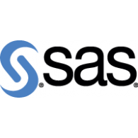

Lors de mon e-portfolio, vous allez découvrir ce que j’ai vécu durant
l’année en BUT2 SD, mais aussi mon avenir. Mon objectif est d’avoir
mon diplôme et de continuer mes études dans un parcours.
L’expérience que je vais vous raconter est sur une expérience d’un
projet que j’ai fait en programmation et qui m’a plu. Au cours de mon
e-portfolio, je vais vous transmettre pourquoi j’ai choisi la
programmation.
Mon e-portfolio, est adressé aux apprentis programmeurs. Le site qui
va être rattaché à mon e-portfolio est mon Linkedin. L’organisation de
mon site va être un site qui me représente. Le type de contenu que je
vais intégrer à chaque page serait du texte ; des images ; des
vidéos et du son. Le ton que je vais utiliser va être neutre et
professionnel.
Parcours
Durant mon année en étude supérieur avec le parcours SD (Sciences des données) spécialisé en VCOD (Visualisation, conception d'outils décisionnels) à l'IUT Paris Rives-de-Seine, j’ai découvert un parcours orienter principalement sur de l’informatique et de la Statistique. Grâce à ces deux matières, j’ai pu approfondir et développer de nouvelles connaissances et compétences.
Lors de ma première année dans mon parcours, j’ai fait plusieurs projets en groupe. J’ai utilisé plusieurs outils comme Python, SQL, Excel pour pouvoir les faire.
A Propos de moi
Qualités
Je suis quelqu’un qui est passionné par la programmation, car grâce à la programmation, nous pouvons faire des graphiques ou des analyses à partir d’un programme spécifique. Je suis également, sérieux, curieux, rigoureux et ordonné.
Les compétences que j’ai acquis en BUT :
Compétences
Python
Traiter des données structurées
Automatiser le traitement de données multidimensionnelles
Intégrer le traitement de données complexes
Développer un composant d’une solution décisionnelle
Rstudio
Traiter des données structurées
Automatiser le traitement de données multidimensionnelles
Intégrer le traitement de données complexes
Développer un composant d’une solution décisionnelle
Participer au déploiement d'une solution décisionnelle
SAS

Traiter des données structurées
Automatiser le traitement de données multidimensionnelles
Intégrer le traitement de données complexes
SQL
Traiter des données structurées
Power BI
Traiter des données structurées
Intégrer le traitement de données complexes
Excel
Traiter des données structurées
Automatiser le traitement de données multidimensionnelles
Intégrer le traitement de données complexes
Passion
En dehors de la programmation, j’aime jouer aux jeux vidéo, faire du sport plus particulièrement le volley-ball et le basket-ball.
Projet
Projet1
Pour mon premier projet, j'ai choisi la SAE "Développement d'un composant d'une solution décisionnelle". Dans le cadre de cette SAE, nous avons constitué des groupes de quatre personnes afin d'analyser les inégalités entre hommes et femmes de plus de 60 ans. Au début du projet, ma tâche consistait à rechercher une base de données portant sur les pensions de retraite et les caisses de retraite des hommes et des femmes. Grâce à cette base de données, j'ai pu créer des graphiques interactifs sur RShiny. Cette plateforme m'a permis de modifier l'âge à ma convenance afin de comparer les pensions de retraite et l'effectif des caisses de retraite entre hommes et femmes. Avant de concevoir les graphiques, j'ai nettoyé la base de données dans RStudio pour obtenir les données nécessaires.
La difficulté que nous avons rencontrée au début de ce projet est que nous ne connaissions pas RShiny et que nous n'avions pas eu beaucoup de temps pour apprendre toutes les fonctions dont nous avions besoin pour mener à bien ce projet.
Projet2
Pour mon deuxième projet, j'ai choisi la SAE "Collecte automatisée de données web". J'ai opté pour ce projet car il est en lien avec le parcours que j'ai choisi et avec mes aspirations professionnelles. Lors de cette SAE, nous avons d'abord analysé le site internet d'Action pour comprendre sa structure. En utilisant l'outil de développement du navigateur (touche F12 ou clic droit puis "Inspecter"), nous avons pu examiner le code HTML du site.
Grâce à cette inspection, nous sommes passés à Python, où nous avons utilisé des importations et des fonctions spéciales pour récupérer la partie "Réponse" fournie par l'API du site. Après avoir stocké la réponse dans la mémoire de Python, nous avons créé des fonctions pour extraire le jeton (token) du code. Sans ce jeton, il nous aurait été impossible d'extraire les noms des produits d'une catégorie, car le jeton change chaque jour.
Une fois le jeton extrait, nous avons regroupé tous les produits d'une catégorie sous forme de fichier JSON dans un dossier, puis nous les avons tous rassemblés dans un fichier CSV afin d'avoir tous les produits en ligne et leurs détails en colonnes.
Projet3
Pour mon troisième projet, j'ai choisi la SAE "Description et prévision de données temporelles". Dans le cadre de cette SAE, nous avons formé un groupe de trois personnes. Notre mission était d'analyser une base de données sur l'utilisation du charbon aux États-Unis au fil du temps. J'ai importé cette base de données dans RStudio afin de la convertir en série temporelle. Une fois cette conversion effectuée, j'ai créé des graphiques pour illustrer l'évolution de l'utilisation du charbon aux États-Unis au fil du temps.
La difficulté que nous avons rencontrée était la compréhension de certaines prédictions qui n'étaient pas très claires.
Projet4
Pour mon quatrième projet, j'ai choisi la SAE "Intégration de données dans un entrepôt de données". Dans le cadre de cette SAE, nous avons formé un groupe de trois personnes. Notre objectif était de traiter les données d'un magasin afin de créer des indicateurs pertinents. Pour ce faire, j'ai commencé par créer un dictionnaire de données sur Excel. Ensuite, j'ai réalisé des graphiques pour mettre en évidence les valeurs manquantes dans chaque table de données. Enfin, j'ai effectué des jointures entre les tables en utilisant leurs identifiants respectifs afin de créer une table générale consolidée.
Projet5
Pour mon dernier projet, j'ai choisi la SAE "Mise en œuvre d'une enquête". Ce projet m'a particulièrement intéressé car il nous a permis de découvrir LimeSurvey, un outil utilisé pour créer des questionnaires. Notre objectif était de concevoir un questionnaire destiné à interroger l'ensemble des membres de l'IUT Paris Rives de Seine. Une fois les réponses collectées, nous avons utilisé ces données pour générer des graphiques illustrant les résultats obtenus.
Projet6 : Expérience professionnel Stage
Point d'amélioration
En ce qui concerne les points d'amélioration, je vais me concentrer sur deux aspects. Tout d'abord, je vais travailler à approfondir ma compétence en programmation (Compétence 1). Lors de la SAE "Collecte automatisée de données", j'ai dû solliciter l'aide de mon professeur à plusieurs reprises, ce qui indique un besoin d'amélioration dans ce domaine.
Ensuite, je vais me concentrer sur le renforcement de mes compétences en statistiques et en mathématiques (Compétence 2). Ces matières sont cruciales pour mon parcours, et je souhaite développer une compréhension plus approfondie pour être plus autonome dans mes futurs projets.
Pour le BUT3
Pour le BUT3, Je vais m'améliorer dans la compétence 2 c'est à dire en Statistique et en mathématiques. Dans la compétence 1 et 4, je vais approfondir mes compétences en programmation, surtout en SAS et SQL.